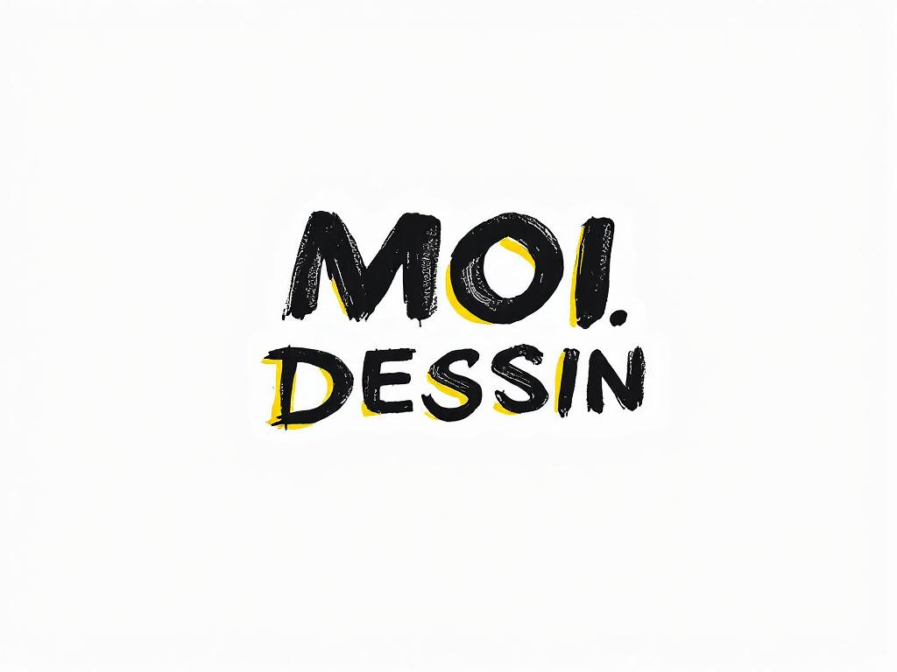
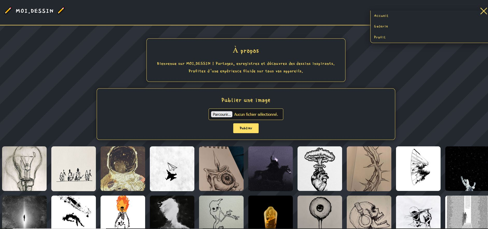
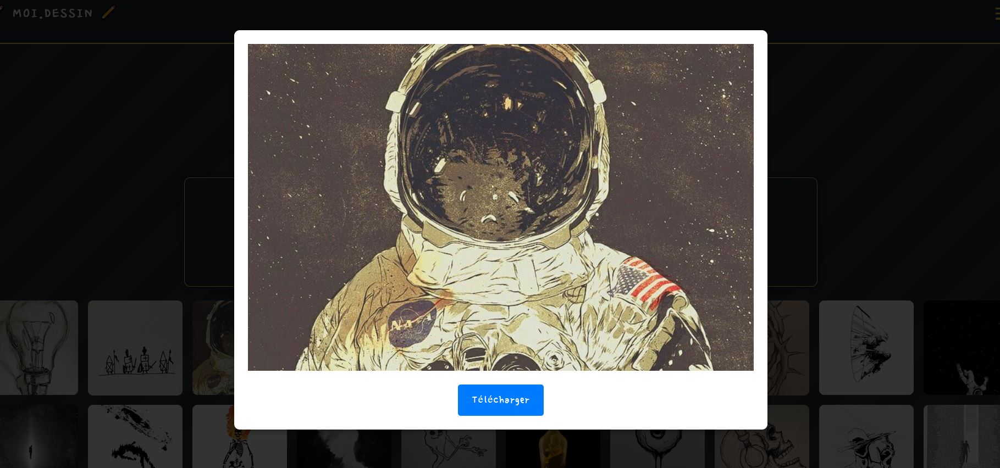
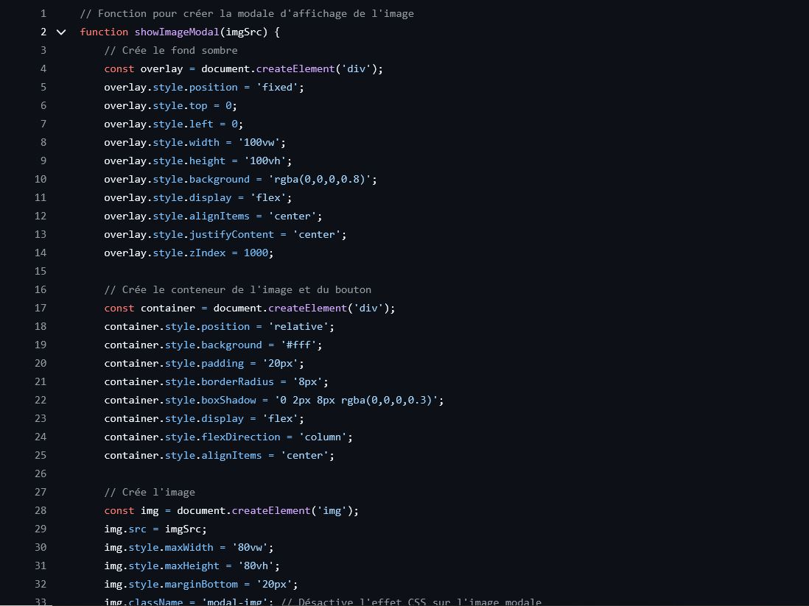

🎯 Contexte du projet
MOI.DESSIN est une plateforme web de partage de dessins, développée dans un style similaire à Pinterest. Réalisée dans un contexte pédagogique, elle permet d'explorer les bases du développement web front-end : galerie d'images interactive, navigation responsive, publication de contenu et expérience utilisateur soignée. En tant qu'étudiant passionné par le dessin, j'ai créé ce site pour explorer et présenter mes créations artistiques.
🎓 Objectifs pédagogiques
- HTML / CSS / JS : Maîtriser les fondamentaux du développement web front-end
- Galerie interactive : Afficher et agrandir des dessins via une modale
- Responsive design : Adapter l'interface à tous les formats d'écran
- Accessibilité : Navigation clavier, aria-labels et bonnes pratiques
- Effets CSS : Animations sur les images et transitions fluides
- Publication d'images : Permettre à l'utilisateur de publier ses propres visuels
✨ Fonctionnalités principales
1. Galerie de dessins
Découvrez et explorez les dessins publiés sur la plateforme. Cliquez sur une illustration pour l'agrandir dans une modale dédiée, avec les animations CSS désactivées pour une expérience de visualisation optimale.
2. Publication d'images
Les utilisateurs peuvent publier leurs propres illustrations directement depuis l'interface. Les images sont stockées localement, permettant une expérience de partage simple et accessible.
3. Menu burger responsive
Navigation fluide sur mobile, tablette et desktop grâce à un menu burger animé et accessible, conçu pour offrir une expérience cohérente quel que soit l'appareil utilisé.
4. Interactions communautaires
Possibilité de commenter et d'aimer les publications pour interagir avec la communauté, ainsi qu'un partage facile sur les réseaux sociaux pour promouvoir les œuvres.
5. Profil utilisateur
Accédez à votre profil et retrouvez l'ensemble de vos images enregistrées. La section "À propos" présente le projet et ses ambitions artistiques.
📸 Captures d'écran

Galerie principale

Vue modale d'un dessin

Extrait du code source
🗄️ Architecture de l'application
Pages et composants principaux :
- index.html : Galerie principale des dessins
- apropos.html : Présentation du projet
- profil.html : Profil et images enregistrées de l'utilisateur
- Footer : Liens vers GitHub et adresse mail de contact
🛠️ Stack technique

HTML5
Structure sémantique des pages avec une attention portée à l'accessibilité

CSS3
Mise en forme, animations, effets visuels et responsive design

JavaScript
Interactions dynamiques, gestion de la galerie, modale et publication d'images
🚀 Défis relevés
- Conception d'une galerie inspirée de Pinterest, fluide et responsive
- Implémentation d'une modale d'agrandissement sans animations parasites
- Création d'un menu burger animé accessible au clavier
- Gestion de la publication et du stockage local des images utilisateur
- Application des bonnes pratiques d'accessibilité (aria-labels, navigation clavier)
- Adaptation de l'interface à tous les formats d'écran (mobile, tablette, desktop)